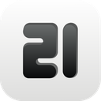
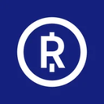
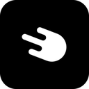
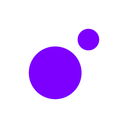
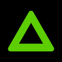

App de compra · registro ESMA a 2026-10-16
¿Está 21bitcoin autorizado en España?
Sí. 21bitcoin puede prestar servicios cripto en España
Opera a través de FIOR Digital GmbH (Austria), que figura en el registro MiCA de ESMA con España entre sus países de servicio.
Sociedades en el registro 1
Preguntas frecuentes
¿Está 21bitcoin autorizado en España?
Sí. Según el registro MiCA de ESMA a 2026-10-16, 21bitcoin opera en la UE a través de FIOR Digital GmbH (Austria), que tiene España entre sus países notificados.
¿Qué es la licencia MiCA?
MiCA es el Reglamento (UE) 2023/1114. Desde el fin del periodo transitorio en España (1 de julio de 2026), para prestar servicios de criptoactivos a residentes en España hay que figurar en el registro MiCA con España notificada, ya sea con autorización CASP (art. 59) o mediante notificación de una entidad financiera ya supervisada (art. 60).
¿Cómo compruebo si 21bitcoin está autorizado?
Busca el nombre jurídico de la sociedad que te presta el servicio (aparece en los términos legales de la app) en el registro MiCA de ESMA y en el listado de la CNMV, y comprueba que España figure entre sus países. Este buscador lo hace por ti con datos a 2026-10-16.
Fuente del mapeo
ESMA CASPS.csv: coincidencia del nombre comercial (ae_commercial_name) o legal (ae_lei_name), revisada a mano. Comprobado el 2026-10-16.
Comprueba otras marcas
Ver todas →
RelaiFrancia · Art. 59Puede operar en EspañaPocket BitcoinSin sociedad en el registroNo figura
StrikeMalta · Art. 59Puede operar en España
MoonPayPaíses Bajos · Art. 59Puede operar en EspañaRampIrlanda · Art. 59Puede operar en EspañaTransakSin sociedad en el registroNo figuraMercuryoSin sociedad en el registroNo figura
BanxaSin sociedad en el registroNo figuraLos cambios del registro, cada lunes
Altas, bajas y quién gana o pierde el permiso para operar en España. Un correo, sin ruido.
¿No ves el formulario? Suscríbete en Beehiiv →
Al suscribirte aceptas recibir la newsletter. Tus datos los gestiona Beehiiv como encargado del tratamiento. Más información en la política de privacidad. Puedes darte de baja en cualquier momento.